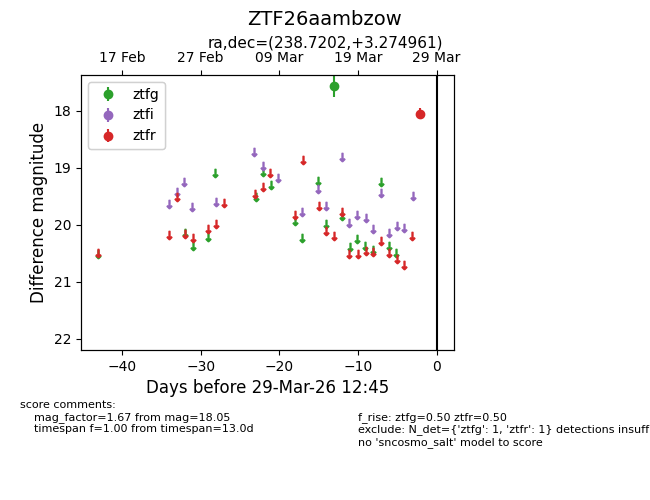
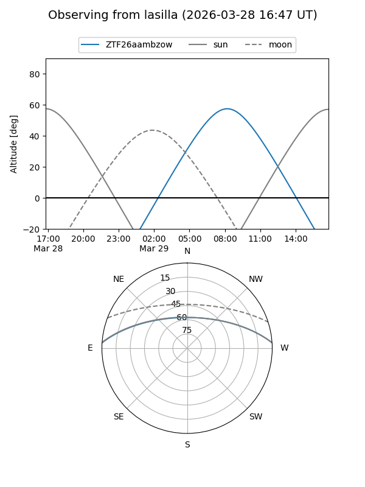
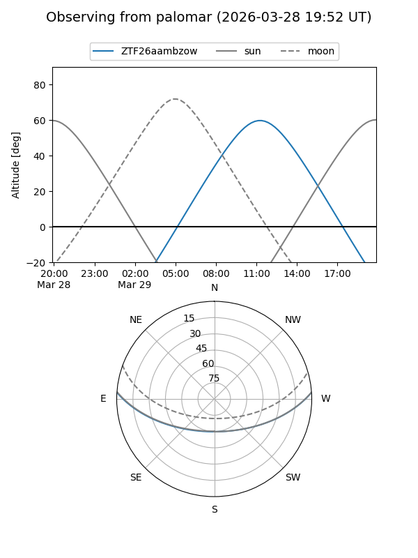

ZTF26aambzow
Target ZTF26aambzow at 2026-03-29 12:48
Aliases and brokers:
FINK: link
Lasair: link
ALeRCE: link
alt names
ZTF26aambzow (ztf,fink_ztf)
Coordinates:
equatorial (ra, dec) = 238.7202,+3.27496
equatorial (HMS+DMS) = 15:54:52.84,+03:16:29.86
galactic (l, b) = (12.5507,+40.15289)
Flags:
Photometry:
last ztfg=17.57, ztfr=18.05
1 ztfg, 1 ztfr detections
Lightcurve

Visibility


Additional plots